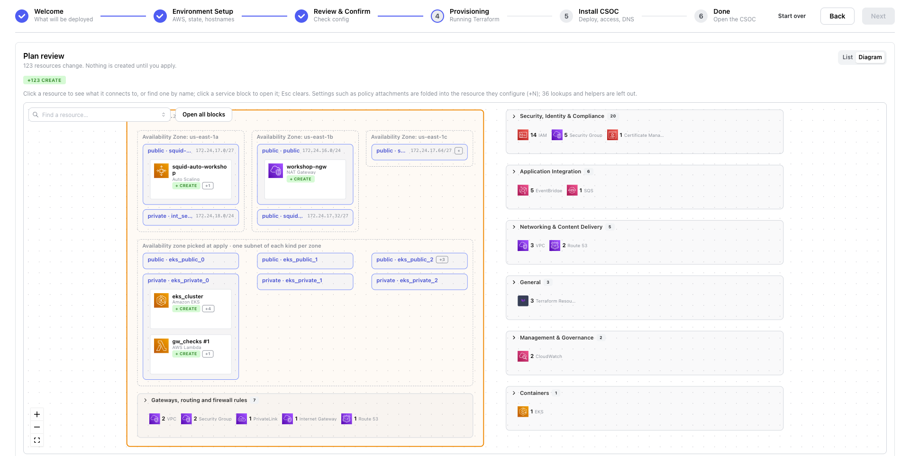

Plan: review what will be created
Read the Terraform plan before anything is created in AWS.
Goal
Review the plan: about 120 AWS resources, grouped by service, shown as a list and as a diagram. The plan changes nothing in AWS.
Steps
- Wait while the banner reads Init in progress and then Plan in progress ("Working out what to create. Under a minute.").
- When the Plan review appears, read the badge. On a new account it reads +120 to create; any number from 110–130 is normal, and there are no other badges.
- In the List view, click a group to open it: network, firewall rules, the Kubernetes cluster, IAM roles and policies, DNS, logging.
- Click Diagram and try these:
- Type
natin Find a resource. The diagram zooms to the match. - Click a resource. Its connections are drawn and named, everything else dims, and its details open. Press Esc to clear.
- Click a service block, or Open all blocks. "Security, Identity & Compliance" holds one IAM role for each controller.
- Type
- Check that there are no −N to destroy or ±N to replace badges. On a new account there are none. Then press Apply in the banner and continue with Apply.
Done when: the banner reads Plan ready, "Review what the plan creates, then apply it. Nothing exists in AWS yet."



Expected result
The badges and labels mean:
| Badge or label | Meaning |
|---|---|
+N to create (green) | New resources. On a new account this is the only badge. |
~N to update (yellow) | Resources changed in place. |
±N to replace (orange) | Resources destroyed and created again. On a running CSOC, read each one before you apply. |
−N to destroy (red) | Resources removed. If the infrastructure already exists, an apply with any of these asks you to type the environment name. |
+N on a diagram card | Settings folded into the resource they configure, such as policy attachments and rules. |
| "Availability zone picked at apply · one subnet of each kind per zone" | Subnets whose availability zone Terraform chooses during the apply, so the plan cannot show which zone each one lands in. |
Time
Under 1 minute from Provision to Plan ready, for the init and the plan together.
What's happening
Terraform downloads the providers and the gen3-terraform modules it needs, connects to the state in your bucket, and compares the configuration with what exists, which on a new account is nothing. The plan is the complete list of changes. Only a summary reaches your browser; the full plan, which contains your settings, stays in the runner. Apply carries out exactly the plan you reviewed.
- The runner downloads the Terraform providers and modules.
- It connects to the state in your bucket, which Terraform locks while it works.
- Terraform computes the changes: about 120 resources to create. Nothing in AWS changes.
- The full plan stays in the runner. Only a summary is extracted.
- Your browser draws the summary as the list and the diagram.
For the state and the lock, see State bucket and registry.
Troubleshooting
| What you see | What it means | What to do |
|---|---|---|
| Banner: The plan failed or The init failed | Nothing in AWS changed. The log shows its Error: lines first. | Read the first Error: line; it names the cause. Fix it, then press Retry plan, or Edit configuration to change the setup. |
| Banner: The plan was stopped | Someone pressed Stop this run. | Press Retry plan. |
| Banner: The plan's result is unknown | The wizard's API restarted while the plan ran, so its end was not recorded. | Press Retry plan. |
| Red box: The plan did not start | Your SSO sign-in expired. Nothing ran. | In a terminal, run aws sso login --profile <your-sso-profile>, then try again. |